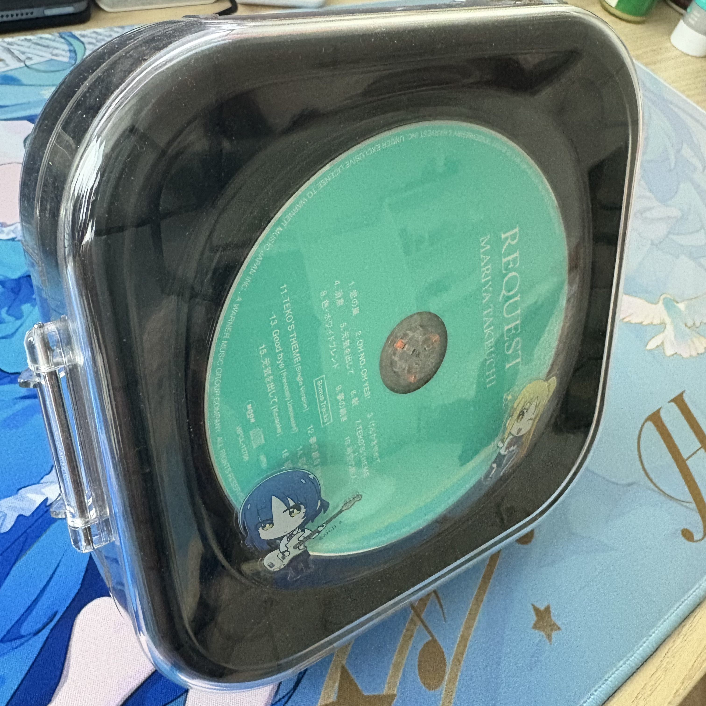
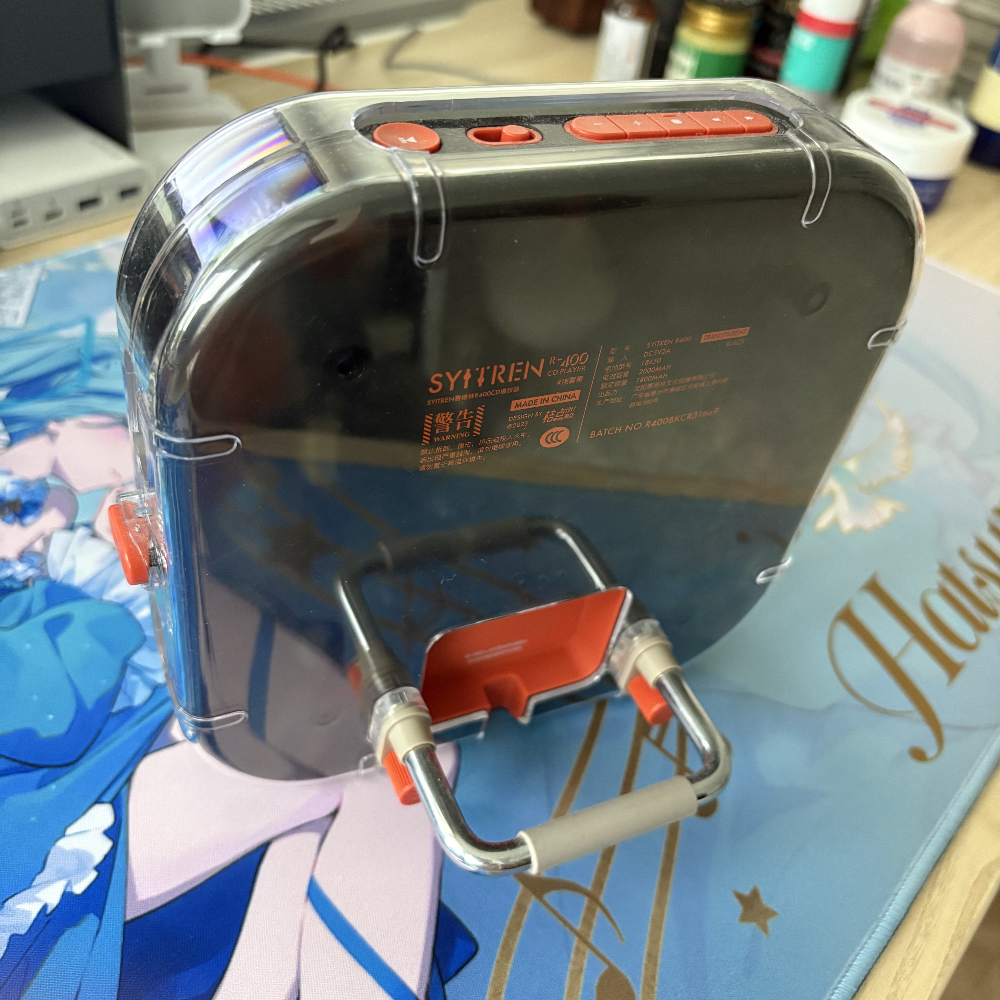

I use a CD player—which requires an external speaker to produce sound—almost every day.


Back when I was very young, I often fell asleep listening to instrumental music by Bandari, so I became quite familiar with the CD player as a device early on. Although I relied primarily on headphones for listening to music for a long period after the advent of iPods and smartphones, I have returned to using a CD player over the past two years.
To me, the fundamental difference between using speakers and headphones lies in transforming sound confined to the ear into melodies that fill the entire room. This turns the space into a richer environment and allows me to share the rhythm with my roommates. Consequently, when the CD player isn't playing, it can be replaced by my own humming or the sound of me playing the guitar.